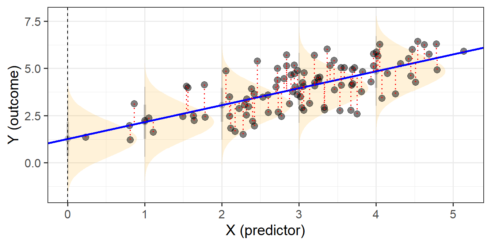
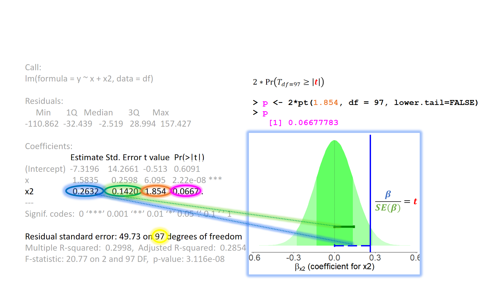
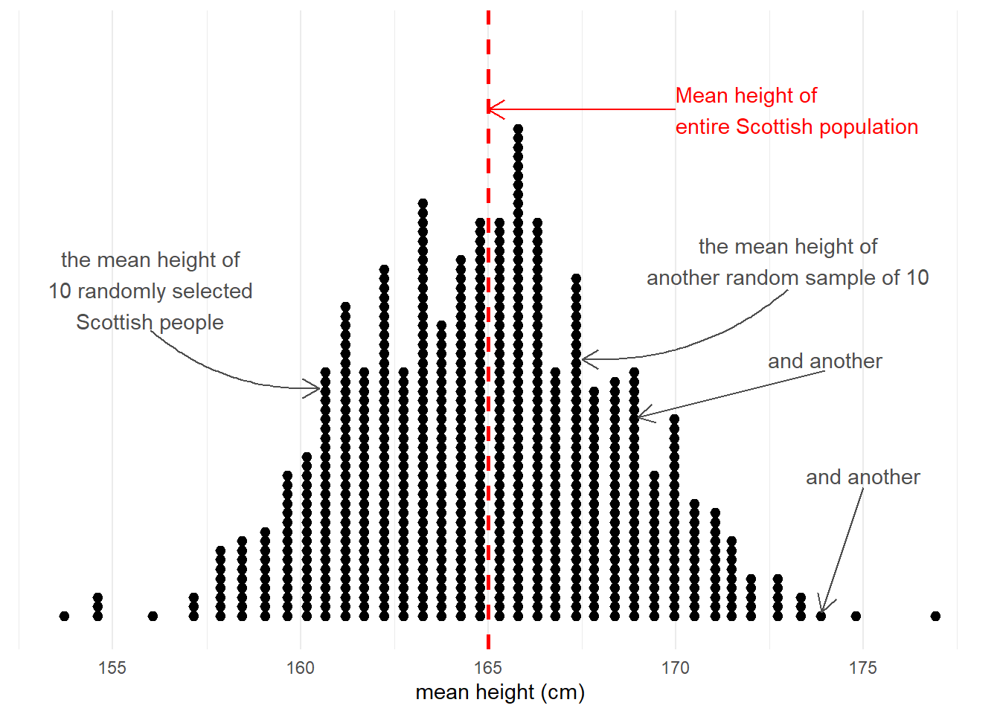
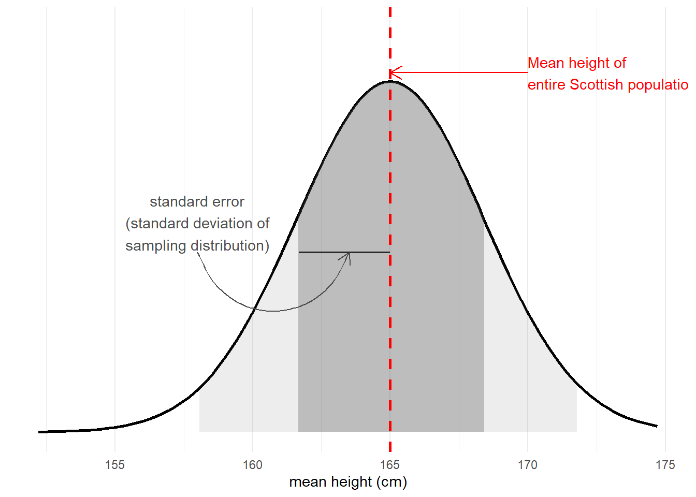
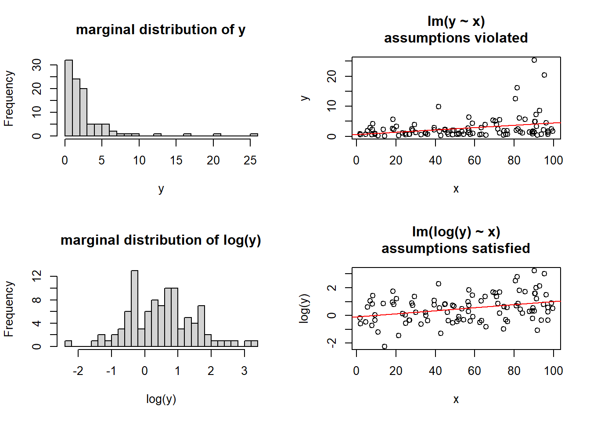
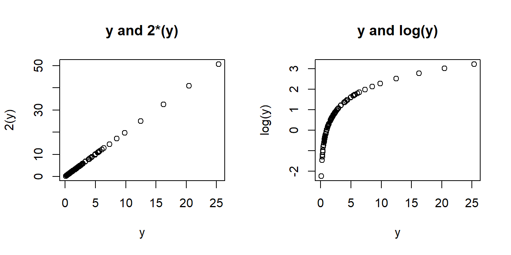
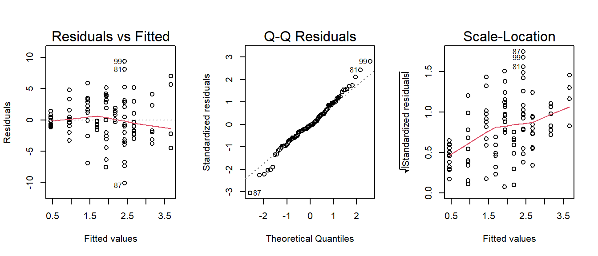
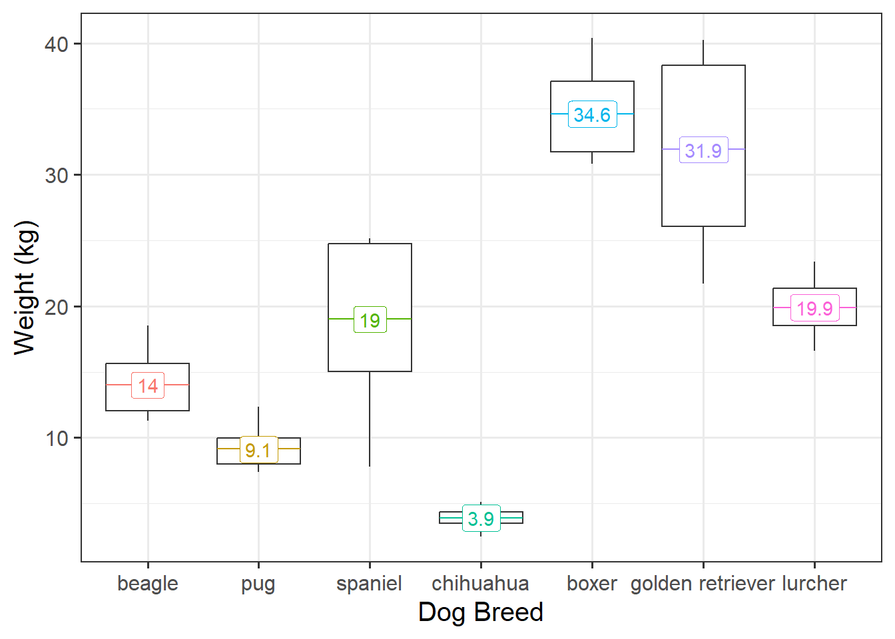
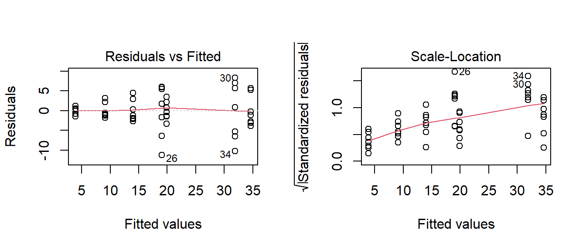
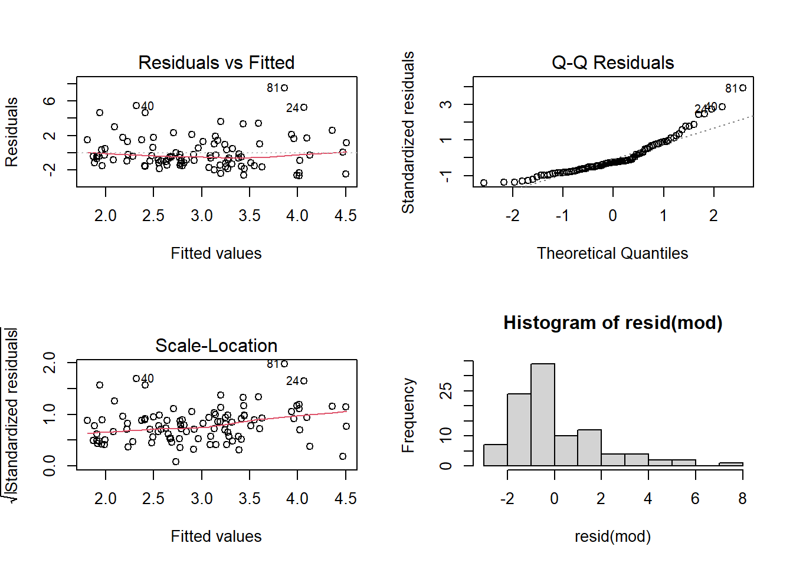

LM Troubleshooting
In the face of plots (or tests) that appear to show violations of the distributional assumptions of linear regression (i.e. our residuals appear non-normal, or variance changes across the range of the fitted model), we should always take care to ensure our model is correctly specified (interactions or other non-linear effects, if present in the data but omitted from our model, can result in assumption violations). Following this, if we continue to have problems satisfying our assumptions, there are various options that give us more flexibility. Brief introductions to some of these methods are detailed below.
LM assumptions in brief
When we fit linear regression models, we are fitting a line (or a regression surface, when we add in more predictors), to a cloud of datapoints. The discrepancy between the fitted model and the observed data is taken up by the residuals.
\[ \begin{align} \color{red}{y} &= \color{blue}{b_0 + b_1x_1 \ + \ ... \ + \ b_px_p} \color{black}{+ \varepsilon}\\ \color{red}{\text{observed }y} &= \color{blue}{\text{fitted }\hat y} \,\, \color{black}{+ \text{ residual }\hat \varepsilon}\\ \end{align} \]
We are theorising that our model contains all the systematic relationships with our outcome variable, we assume that the residuals - the leftovers - are essentially random noise. This is the \(\epsilon \sim N(0, \sigma)\) bit, which is a way of specifying our assumption that the errors are normally distributed with a mean of zero (see Figure 1).
We typically want to check our model residuals (by plotting or performing statistical tests) to determine if we have reason to believe our assumptions are violated. The easiest way to do this in R is with plot(model), which provides us with a series of visuals to examine for unusual patterns and conspicuous observations.
When model assumptions appear problematic, then our inferential tools go out the window. While our specific point estimates for our regression coefficients are our best linear estimates for the sample that we have, our standard errors rely on the distributional assumptions of the residuals1. It is our standard errors that allow us to construct test statistics and compute p-values (Figure 2) and construct confidence intervals. Our assumptions underpin our ability to generalise from our specific sample to make statements about the broader population.

Refresher: Standard Error
Taking samples from a population involves an element of randomness. The mean height of 10 randomly chosen Scottish people will not be exactly equal to the mean height of the entire Scottish population. Take another sample of 10, and we get another mean height (Figure 3).

The standard error of a statistic is the standard deviation of all the statistics we might have computed from samples of that size (Figure 4). We can calculate a standard error using formulae (e.g. for a mean, the standard error is \(\frac{\sigma}{\sqrt{n}}\)) but we can also use more computationally intensive approaches such as “bootstrapping” to actually generate an empirical sampling distribution of statistics which we can then summarise.
We use the standard error to quantify the uncertainty around our sample statistic as an estimate of the population parameter, or to construct standardised test statistics in order to perform tests against some null hypothesis.

Measurement!
Detailed below are various methods that allow us to be flexible with regard to the distributional assumptions we have to hold when using linear regression.
The elephant in the room is that whatever we do, we should be cognizant of the validity of our measurements. If we’re not measuring what we think we’re measuring, then we’re in trouble.
Transformation of the outcome variable.
A somewhat outdated approach, transforming our outcome variable prior to fitting the model, using something such as log(y) or sqrt(y), will sometimes allow us to estimate a model for which our assumptions are satisfied.

The major downside of this is that we are no longer modelling \(y\), but some transformation \(f(y)\) (\(y\) with some function \(f\) applied to it). Interpretation of the coefficients changes accordingly, such that we are no longer talking in terms of changes in y, but changes in \(f(y)\). When the transformation function used is non-linear (see the Right-Hand of Figure 6) a change in \(f(y)\) is not the same for every \(y\).

Finding the optimal transformation to use can be difficult, but there are methods out there to help you. One such method is the BoxCox transformation, which can be conducted using BoxCox(variable, lambda="auto"), from the forecast package.2
For certain transformations, we can re-express coefficients to be interpretable with respect to \(y\) itself. For instance, the model using a log transform \(ln(y) = b_0 + b_1(x)\) gives us a coefficient that represents statement A below. We can re-express this by taking the opposite function to logarithm, the exponent, exp(). Similar to how this works in logistic regression, the exponentiated coefficients obtained from exp(coef(model)) are multiplicative, meaning we can say something such as statement B
- A: “a 1 unit change in \(x\) is associated with a \(b\) unit change in \(ln(y)\)”.
- B: “a 1 unit change in \(x\) is associated with \(e^b\) percent change in \(y\).”
Heteroscedastic robust standard errors (Huber White)
Often, when faced with residuals that appear to violate our assumption of constant variance (also called “homoscedasticity” or “equal variance”), a suitable option is simply to apply a correction to ensure that we make the correct inferences.
There are various alternative calculations of standard errors that are robust to non-constance variance (or “heteroscedasticity”). The most commonly used are the “Huber-White” standard errors3, which are robust to heteroscedasticity and/or non-normality. Fortunately, we don’t have to do any complicated calculations ourselves, as R will do all of the hard work for us.

Our original uncorrected standard errors:
troubledf2 <- read_csv("https://uoepsy.github.io/data/trouble2.csv")
mod <- lm(y ~ 1 + x + x2, data = troubledf2)
summary(mod)$coefficients Estimate Std. Error t value Pr(>|t|)
(Intercept) -0.038356059 0.9837690 -0.038988886 0.96898022
x 0.492474335 0.2445796 2.013554062 0.04685567
x2b 1.230574302 0.8311491 1.480569879 0.14199579
x2c -0.001012855 0.8451027 -0.001198499 0.99904622Using the lmtest and sandwich packages, we can use the Huber-White estimation to do both coefficient tests and model comparisons.
Tests of the coefficients
library(lmtest)
library(sandwich)
coeftest(mod, vcov = vcovHC(mod, type = "HC0"))
t test of coefficients:
Estimate Std. Error t value Pr(>|t|)
(Intercept) -0.0383561 0.8635215 -0.0444 0.96466
x 0.4924743 0.2631998 1.8711 0.06438 .
x2b 1.2305743 0.7625359 1.6138 0.10985
x2c -0.0010129 0.9210642 -0.0011 0.99912
---
Signif. codes: 0 '***' 0.001 '**' 0.01 '*' 0.05 '.' 0.1 ' ' 1Model comparisons
mod_res <- lm(y ~ 1 + x, data = troubledf2)
mod_unres <- lm(y ~ 1 + x + x2, data = troubledf2)
waldtest(mod_res, mod_unres, vcov = vcovHC(mod_unres, type = "HC0"))Wald test
Model 1: y ~ 1 + x
Model 2: y ~ 1 + x + x2
Res.Df Df F Pr(>F)
1 98
2 96 2 1.8704 0.1596Weighted Least Squares (WLS)
If we have some specific belief that our non-constant variance is due to differences in the variances of the outcome between various groups, then we might be better suited to use Weighted Least Squares.
As an example, imagine we are looking at weight of different dog breeds (Figure 8). The weights of chihuahuas are all quite close together (between 2 to 5kg), but the weight of, for example, spaniels is anywhere from 8 to 25kg - a much bigger variance.

Recall that the default way that lm() deals with categorical predictors such as dog breed, is to compare each one to a reference level. In this case, that reference level is “beagle” (first in the alphabet). Looking at Figure 8 above, which comparison do you feel more confident in?
- A: Beagles (14kg) vs Pugs (9.1kg). A difference of 4.9kg.
- B: Beagles (14kg) vs Spaniels (19kg). A difference of 5kg.
Hopefully, your intuition is that A looks like a clearer difference than B because there’s less overlap between Beagles and Pugs than between Beagles and Spaniels. Our standard linear model, however, assumes the standard errors are identical for each comparison:
Call:
lm(formula = weight ~ breed, data = dogdf)
...
Coefficients:
Estimate Std. Error t value Pr(>|t|)
(Intercept) 13.996 1.649 8.489 1.17e-10 ***
breedpug -4.858 2.332 -2.084 0.0433 *
breedspaniel 5.052 2.332 2.167 0.0360 *
breedchihuahua -10.078 2.332 -4.322 9.28e-05 ***
breedboxer 20.625 2.332 8.846 3.82e-11 ***
breedgolden retriever 17.923 2.332 7.687 1.54e-09 ***
breedlurcher 5.905 2.332 2.533 0.0151 *
---Furthermore, we can see that we have heteroscedasticity in our residuals - the variance is not constant across the model:

Weighted least squares is a method that allows us to apply weights to each observation, where the size of the weight indicates the precision of the information contained in that observation.
We can, in our dog-breeds example, allocate different weights to each breed. Accordingly, the Chihuahuas are given higher weights (and so Chihuahua comparisons result in a smaller SE), and Spaniels and Retrievers are given lower weights.
library(nlme)
load(url("https://uoepsy.github.io/data/dogweight.RData"))
dogmod_wls = gls(weight ~ breed, data = dogdf,
weights = varIdent(form = ~ 1 | breed))
summary(dogmod_wls)Coefficients:
Value Std.Error t-value p-value
(Intercept) 13.995640 1.044722 13.396516 0.0000
breedpug -4.858097 1.271562 -3.820576 0.0004
breedspaniel 5.051696 2.763611 1.827933 0.0747
breedchihuahua -10.077615 1.095964 -9.195207 0.0000
breedboxer 20.625429 1.820370 11.330351 0.0000
breedgolden retriever 17.922779 2.976253 6.021927 0.0000
breedlurcher 5.905261 1.362367 4.334559 0.0001We can also apply weights that change according to continuous predictors (e.g. observations with a smaller value of \(x\) are given more weight than observations with larger values).
Bootstrap
The bootstrap method is an alternative non-parametric method of constructing a standard error. Instead of having to rely on calculating the standard error with a formula and potentially applying fancy mathematical corrections, bootstrapping involves mimicking the idea of “repeatedly sampling from the population”. It does so by repeatedly resampling with replacement from our original sample.
What this means is that we don’t have to rely on any assumptions about our model residuals, because we actually generate an actual distribution that we can take as an approximation of our sampling distribution, meaning that we can actually look at where 95% of the distribution falls, without having to rely on any summing of squared deviations.
- Step 1: Resample with replacement from the sample.
- Step 2: Fit the model to the resample from Step 1, and obtain a coefficient estimate.
- Step 3: Repeat Steps 1 and 2 thousands of times, to get thousands of estimates.
- Step 4: The distribution of all our bootstrap estimates will approximate the sampling distribution of the coefficient. It gives us an idea of “what we would get if we collected another sample of the same size”. We can use the standard deviation of these estimates as our standard error.
We can do this really easily in R, as there are various packages/functions that do it all for us. For instance, we might have the following model:
troubledf3 <- read_csv("https://uoepsy.github.io/data/trouble3.csv")
mod <- lm(y ~ x + x2, data = troubledf3)
summary(mod)
...
lm(formula = y ~ x + x2, data = troubledf3)
...
Coefficients:
Estimate Std. Error t value Pr(>|t|)
(Intercept) 1.5156 0.6385 2.374 0.0196 *
x 0.3770 0.1699 2.219 0.0289 *
x2b 0.2497 0.5368 0.465 0.6429
x2c -0.1306 0.5833 -0.224 0.8233
x2d 1.1534 0.5323 2.167 0.0327 *
---However, a quick look at our residual plots (Figure 9) give us reason to hesitate. We can see clear deviations from normality in the QQ-plot.

Boostrapped Coefficients
We can get out some bootstrapped confidence intervals for our coefficients using the car package:
library(car)
# bootstrap our model coefficients
boot_mod <- Boot(mod)
# compute confidence intervals
Confint(boot_mod)Bootstrap bca confidence intervals
Estimate 2.5 % 97.5 %
(Intercept) 1.5156272 0.269082523 3.0150279
x 0.3769504 0.005839124 0.7201455
x2b 0.2497345 -0.718176725 1.3009887
x2c -0.1305828 -1.015342466 0.6681926
x2d 1.1534433 0.031319608 2.4027965Bootstrapped ANOVA
If we want to conduct a more traditional ANOVA, using Type I sums of squares to test the reduction in residual variance with the incremental addition of each predictor, we can get bootstrapped p-values from the ANOVA.boot function in the lmboot package.
Our original ANOVA:
anova( lm(y~x+x2, data = df) )Analysis of Variance Table
Response: y
Df Sum Sq Mean Sq F value Pr(>F)
x 1 20.64 20.6427 5.4098 0.02215 *
x2 3 25.60 8.5331 2.2363 0.08902 .
Residuals 95 362.50 3.8158
---
Signif. codes: 0 '***' 0.001 '**' 0.01 '*' 0.05 '.' 0.1 ' ' 1And our bootstrapped p-values:
library(lmboot)
my_anova <- ANOVA.boot(y~x+x2, data = df,
B = 1000)
# these are our bootstrapped p-values:
my_anova$`p-values`[1] 0.023 0.100#let's put them alongside our original ANOVA table:
cbind(
anova( lm(y~x+x2, data = df) ),
p_bootstrap = c(my_anova$`p-values`,NA)
) Df Sum Sq Mean Sq F value Pr(>F) p_bootstrap
x 1 20.64273 20.642727 5.409835 0.02215056 0.023
x2 3 25.59936 8.533122 2.236273 0.08902175 0.100
Residuals 95 362.49886 3.815777 NA NA NAOther things
We can actually bootstrap almost anything, we just need to get a bit more advanced into the coding, and create a little function that takes a) a dataframe and b) an index that defines the bootstrap sample.
For example, to bootstrap the \(R^2\) for the model lm(y~x+x2), we would create a little function called rsq:
rsq <- function(data, indices){
# this is the bootstrap resample
bdata <- data[indices,]
# this is the model, fitted to the resample
fit <- lm(y ~ x + x2, data = bdata)
# this returns the R squared
return(summary(fit)$r.square)
}We then use the boot package, giving 1) our original data and 2) our custom function to the boot() function, and compute some confidence intervals:
library(boot)
bootrsq_results <- boot(data = df, statistic = rsq, R = 1000)
boot.ci(bootrsq_results, type = "bca")BOOTSTRAP CONFIDENCE INTERVAL CALCULATIONS
Based on 1000 bootstrap replicates
CALL :
boot.ci(boot.out = bootrsq_results, type = "bca")
Intervals :
Level BCa
95% ( 0.0174, 0.2196 )
Calculations and Intervals on Original Scale
Some BCa intervals may be unstable
Cautions
- The bootstrap may give no clue there is bias, when the cause is lack of model fit.
- The bootstrap does not “help with small samples”. Bootstrap distributions tend to be slightly too narrow (by a factor of \(\sqrt{(n-1)/n}\) for a single mean), and can actually perform worse than standard methods for small samples.
- If your sample is not representative of the population, bootstrapping will not help at all.
- There are many different types of bootstrap (e.g. we can resample the observations, or we can resample the residuals), and also different ways we can compute confidence intervals (e.g. take percentiles of the bootstrap distribution, or take the standard deviation of the bootstrap distribution, or others).
Non-Parametric Tests
Many of the standard hypothesis tests that we have seen (\(t\)-tests, correlations etc) have got equivalent tests that, instead of examining change in \(y\), examine change in something like \(rank(y)\)4. By analyising ranked data, we don’t have to rely on the same distributional assumptions (ranked data always follows a uniform distribution), and any outliers will have exert less influence on our results.
However, these tests tend to be less powerful (if there is a true effect in the population, these tests have a lower chance of detecting it), and you lose a lot of interpretability.
Wilcoxon tests are a non-parametric equivalent to the various \(t\)-tests, and the Kruskal-Wallis test is the non-parametric version of the one-way ANOVA.
| parametric | non-parametric |
|---|---|
one sample t-testt.test(y) |
wilcoxon signed-rank testwilcox.test(y) |
paired sample t-testt.test(y1,y2,paired=TRUE) ort.test(y2-y1) |
wilcoxon matched pairswilcox.test(y1,y2,paired=TRUE) orwilcox.test(y2-y1) |
independent samples t-testt.test(y1, y2) ort.test(y ~ group) |
mann-whitney U wilcox.test(y1, y2) orwilcox.test(y ~ group) |
one-way ANOVAanova(lm(y ~ g))post-hoc tests: TukeyHSD(aov(y ~ g)) |
kruskal-walliskruskal.test(y ~ g)post-hoc tests: library(FSA)dunnTest(y ~ g) |
Footnotes
Why is this? It’s because the formula to calculate the standard error involves \(\sigma^2\) - the variance of the residuals. If this standard deviation is not accurate (because the residuals are non-normally distributed, or because it changes across the fitted model), then this in turn affects the accuracy of the standard error of the coefficient↩︎
This method finds an appropriate value for \(\lambda\) such that the transformation \((sign(x) |x|^{\lambda}-1)/\lambda\) results in a close to normal distribution.↩︎
This is a special formulation of something called a ‘Sandwich’ estimator!↩︎
or \(sign( rank(|y|) )\)↩︎